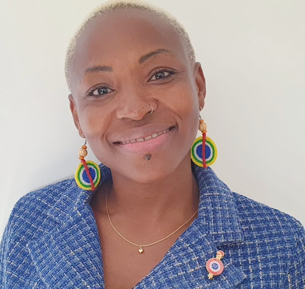

Regine Komokoli

Régine Komokoli est conseillère départementale déléguée à la protection maternelle et infantile,à la petite enfance et à la parentalité d'Ille-et-Vilaine. Elle a créé le collectif Kuné : Faire ensemble à Villejean en septembre 2023, un réseau d’auto-défense pour lutter contre les violences faites aux femmes. Ancienne migrante, et sans papier, son parcours de vie atypique nourrit sa force.
« Si je devais donner un titre à ma vie, je dirais : mon merveilleux malheur de rencontrer de belles personnes. »
« Je suis la première femme élue de la République française avec un passé de sans-papiers. »
Une voix posée et douce, et un ton un brin las, Régine raconte ce qui l’a construite. Originaire de la République centrafricaine, son éducation est sommaire, les années blanches se multiplient rythmées par la guerre. Les allers-retours au Cameroun ou au Congo fluctuent en fonction de la situation en Centrafrique. Elle explique son départ pour la France par son statut de femme : « À 19 ans, on m’a choisie pour partir, j’étais la première de la famille, et une fille. J’avais plus de chance de réussir à rester ».
Quand elle arrive à Roissy Charles de Gaulle, elle est en pagne, avec pour seul contact un numéro de téléphone d’une tante qui habite à Lyon. Régine ne connaît personne, c’est une copine à elle qui est en Afrique qui lui trouve une solution d’hébergement. Ballotée, de lieux en lieux, elle fait la rencontre de marchands de sommeil et de personnes mal intentionnées. On lui propose un logement contre des tâches, l’exploitation devient quotidienne.
« Je devais me battre »
La jeune femme se rend vite compte que son visa n’est pas utilisable et n’est qu’un montage. Elle est alors entraînée dans un mariage blanc abusif et subit les sévices d'un conjoint violent qui profite de sa naïveté. « Je ne savais pas que je pouvais demander l’asile en tant que réfugiée de guerre. Je pensais que j’étais coincée dans ce mariage. Je parlais très mal le français, je ne parlais que le Zongo » se rappelle-t-elle. Elle craint de partir, son mari âgé d’une cinquantaine d’années lui fait du chantage pour ne pas qu’elle ne le quitte. Régine reste trois ans dans cette union qui se termine par une dénonciation. Lors de sa procédure de régularisation, il envoie un message à la juge avec une simple phrase « Ce n’est pas un vrai mariage, c’est un mariage blanc ». Le dossier de Régine est tout de suite rejeté.
La seule porte de sortie que la jeune femme entrevoit est l’éducation, elle se tourne alors vers une formation d’infirmière à Paris: « J’ai aussi rencontré une association d’aide aux femmes migrantes, qui m’a permis de connaître mes droits » . Régine rencontre à Paris le papa de ses deux filles aînées, qui se révèle être un homme violent. Plus tard, elle s’installe à Villejean et se met avec le père de sa dernière fille qui lui aussi la violente et la menace de mort.
Un jour de 2019, usée par la situation, Régine décide de ne plus se laisser faire et quitte son compagnon : « Je devais me battre, j’ai eu un gros déclic ». C’est le début de trois ans d’errance, au milieu des appels au 115, des hébergements provisoires et des nuits dans la voiture avec ses trois filles. Le médecin la diagnostique avec une dépression post-traumatique. « On ne guérit pas de la dépression mais on vit avec » constate Régine.
Portée par son histoire de vie
La femme met un point d’honneur à éduquer ses filles et met toutes ses économies dans leur école. La carte scolaire ne prend pas en compte les personnes qui n’ont pas de logements fixes, et leur habitation change trop pour dépendre de l’éducation publique : « Je me suis promis d’offrir à mes filles ce que je n’ai pas eu ». C’est aussi le début de l’engagement politique de Régine grâce à une rencontre. Alors dans la rue, elle donne quelques heures de cours de zumba par semaine dans son quartier « Si je devais donner un titre à ma vie, je dirais : mon merveilleux malheur de rencontrer de belles personnes » rit-elle. Dans sa maison de quartier, un homme rentre en coup de vent et demande à l’amie de Régine si elle veut s’inscrire dans la liste des verts au municipale de Rennes. La femme décline et propose le poste à Régine. Elle accepte intriguée. Malheureusement, trop loin dans la liste, elle ne sera pas élue.
Son ambition se nourrit alors de cette défaite et elle se présente aux départementales. En janvier 2023, elle est élue conseillère départementale de l’Ille-et-Vilaine. « Je suis la première femme élue de la République française avec un passé de sans-papiers » se réjouit-elle. Le même mois, elle s’installe dans son premier appartement qui s’inscrit dans un projet intergénérationnel et collaboratif. Régine peut enfin souffler mais tout d’un coup l’appartement lui paraît trop grand : « Parfois, mes filles et moi nous dormons dans la même chambre. Ça laisse des traces ».
Régine met un point d’honneur à s’engager dans l'associatif. Au début, l’élue s’engage dans l’aide à la précarité, au soutien aux femmes. Portée par son histoire de vie, elle se décide à créer un collectif d’auto-défense pour les femmes, dans son quartier : Villejean. Régine explique : « Le but est d’être partout, et tout le temps disponible, nous voulons brouiller les pistes pour que les hommes ne puissent pas nous intimider » . Les femmes du collectif ont été formées à l’écoute bienveillante, et souhaitent donner la parole aux femmes, pour pouvoir se libérer de la violence et surtout la reconnaître. Régine Komokoli souhaite que son histoire serve aux femmes qui vivent la même chose qu’elle.
Aujourd’hui âgée de 42 ans, Régine est mère de trois filles, assumant son rôle de maman solo, elle rappelle : « Je le dis car je sais que beaucoup de femmes sont dans ce cas-là, c’est difficile et on peut se sentir seules, mais vous n’êtes pas seules ». L’histoire de cette centrafricaine devenue élue de la République française est celle d’une femme portée par la force inépuisable de ceux qui refusent de plier sous le poids de l'adversité.